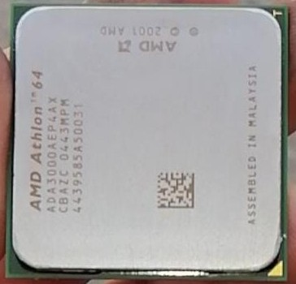

CPU(central process unit)

La CPU è il "cuore" di un computer e si occupa di elaborare e eseuire tutte le istruzioni in un computer.
La CPU è composta da:
- CU: Control Unit, che preleva istruzioni e dati dalla memoria centrale;
- ALU: arithmetic Logic Unit , che si occupa di eseguire le operazioni logiche e aritmetiche;
- FPU: Floating Point Unit, che si occupa dei calcoli in virgola mobile;
- registri: celle di memorie in cui si possono leggere e scrivere dati e i più conosciuti sono:
- registro IP o PC: Instruction Pointer o Programm Counter, che contiene l'indirizzo dell'indirizzo successivo;
- registro dei flag: contiene informazioni che determinano i stati delle unità di calcolo;
Il socket o lo slot della CPU permette la connessione tra la motherboard e il processore. I socket CPU e i processori moderni sono assemblati in base alle seguenti architetture: